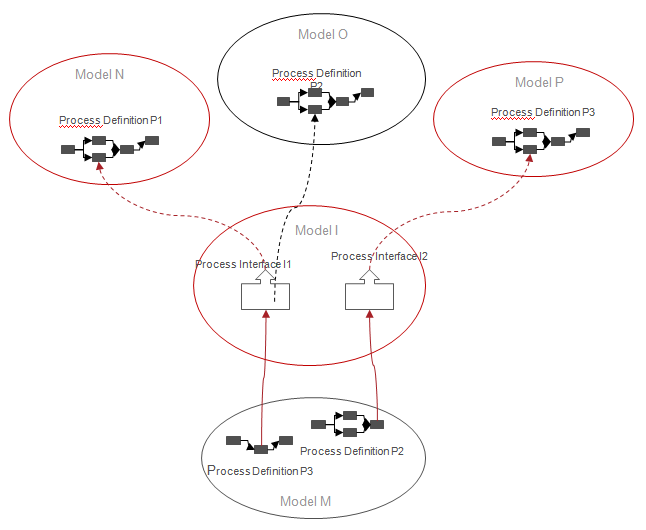
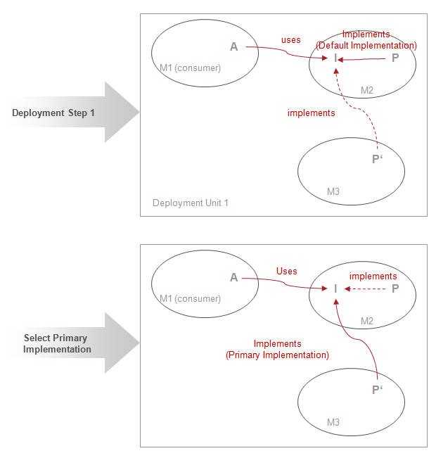

The implementing process definition to invoke at runtime can be defined either statically as an administrative action or determined from process data via Dynamic Sub-process Binding.
Per deployment of a provider model, for each defined Process Interface, a Primary Implementation can be specified. The Primary Implementation is identified by the model ID of the consumer model the Implementation is defined in. If not otherwise specified, the Default Implementation of the Process Interface is considered as Primary Implementation. Please refer to section Implementing Process Interfaces of chapter Creating Models With Cross References for details on process interfaces.
At runtime, if not otherwise specified (see below), whenever a Sub-process Activity associated with a Process Interface gets executed, the Primary Implementation of that Process Interface gets actually executed.
Primary Implementations can be freely redefined over time. If the uses link contributing a Primary Implementation ceases to exist, the Default Implementation associated with the Process Interface will be considered the Primary Implementation again.
If a runtime environment contains several implementations for a given process interface, it is possible to select the primary implementation to be invoked at runtime. The implementing process definition can be selected per process interface. Hence different implementations for the process interfaces defined in one model can be distributed over different models.
The following figure illustrates a model (Model I) having process interfaces defined with different implementations (using Model M), which are distributed over the different models (Model N, Model O, Model P).

Figure: Distributing Implementations.
Selecting an implementing process definition at runtime is not supported during model deployment, but can only be done in a subsequent administrative gesture.
The following scenario describes this issue:
All models M1, M2 and M3 are already deployed in
the system. Now an administrator configures process definition P'
defined in model M2 as the primary implementation of interface
I as shown in the following figure:

Figure: Selecting Alternative Process Interface Implementations
Sub-process activities invoking a process with a Process Interface may be marked to be resolved at runtime. In this case a data path can be defined to pass the Id of model providing the implementation for the process interface to be invoked at runtime. Please refer to the section Dynamic Binding of Sub-process Implementation of the chapter Working with Process Interface in the Modeling Guide. for detailed information on marking a process interface to be resolved at runtime.
In case the process variable cannot be resolved properly or one of the requirements listed in section Requirements is not fulfilled, the process instance is put in interrupted state.
Using data-bound runtime binding allows scenarios like the following:
Dynamic binding is only allowed if one of the following cases applies: